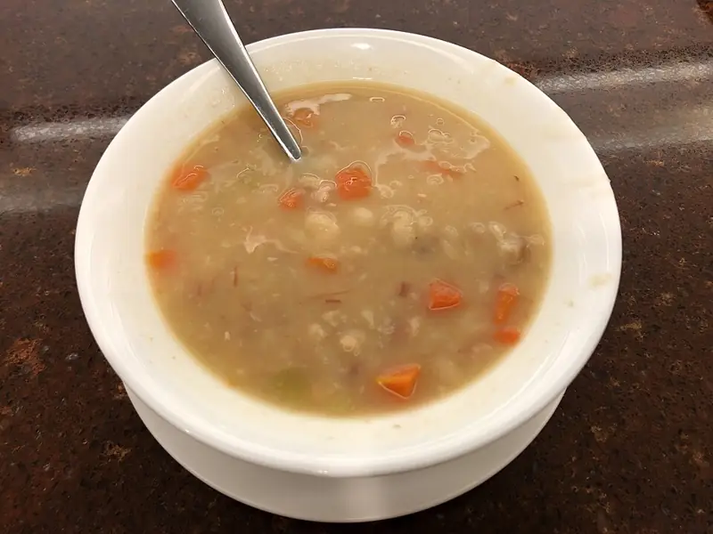

Фото: Thomson200, CC0

Фасолевый суп постный
Густой суп из белой фасоли с картофелем и томатом на воде
150 мин6 порц.160 ккал на порциюБ 9 · Ж 1 · У 29Русская кухня
Продукты на 6 порц.
- Фасоль сухая1 стак.
- Вода2500 мл
- Картофель3 шт
- Морковь1 шт
- Лук репчатый1 шт
- Томатная паста по желанию1 ст. л.
- Чеснок2 зуб.
- Лавровый лист2 шт
- Соль2 ч. л.
- Перец чёрный молотыйпо вкусу
- Петрушка по желаниюпо вкусу
Как готовить
- Фасоль переберите, промойте и замочите в холодной воде на 8-12 часов.
- Слейте воду, залейте фасоль свежей водой, доведите до кипения и варите на слабом огне 1-1,5 часа, пока фасоль не станет мягкой. Не солите в начале, иначе фасоль останется жёсткой.
- Добавьте картофель кубиками, тёртую морковь и мелко нарезанный лук. Варите 15-20 минут до мягкости картофеля.
- Разведите томатную пасту в половнике бульона и влейте в суп. Положите лавровый лист, посолите.
- Варите ещё 5 минут, в конце добавьте выдавленный чеснок, перец и рубленую петрушку.
Совет. Чтобы ускорить, возьмите 2 банки консервированной фасоли без заливки и добавьте вместе с картофелем: суп будет готов за 30 минут.